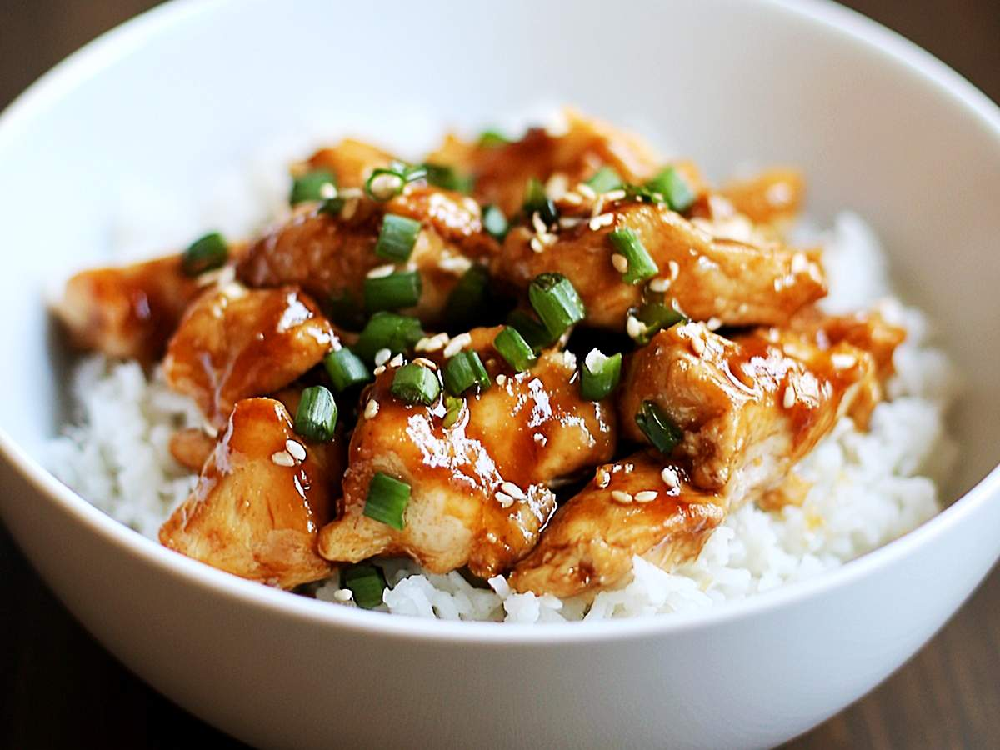

Back Home
Teriyaki Chicken

A juicy asian tempered chicken
Ingredients
- 1.5-1.75 lbs boneless, skinless chicken thighs (or breasts), cut into bite-sized pieces
- 1/4 cup soy sauce
- 3 Tbsp brown sugar (or honey)
- 1 Tbsp water
- 1 clove garlic, minced
- 1 tsp grated fresh ginger
- 1 Tbsp cornstarch (mixed with 1 Tbsp water for slurry)
- 2 Tbsp cooking oil (like vegetable or sesame)
- Optional: Sliced Green Onions
Preparation
- Prepare the sauce: In a small bowl, whisk together soy sauce, brown sugar (or honey), water, minced garlic, grated ginger, and mirin/sake if using. Set aside.
- Heat 1 Tbsp oil in a large skillet or wok over medium-high heat. Add the chicken pieces in a single layer and cook for 4-5 minutes per side until browned and nearly cooked through (internal temp about 160°F).
- Pour the sauce over the chicken. Let it simmer for 2-3 minutes to reduce slightly.
- Stir > the cornstarch slurry and cook for another 1-2 minutes until the sauce thickens and glazes the chicken.
- Remove heat, garnish with sesame seeds and green onions, and serve hot over steamed rice or with stir-fried vegetables.